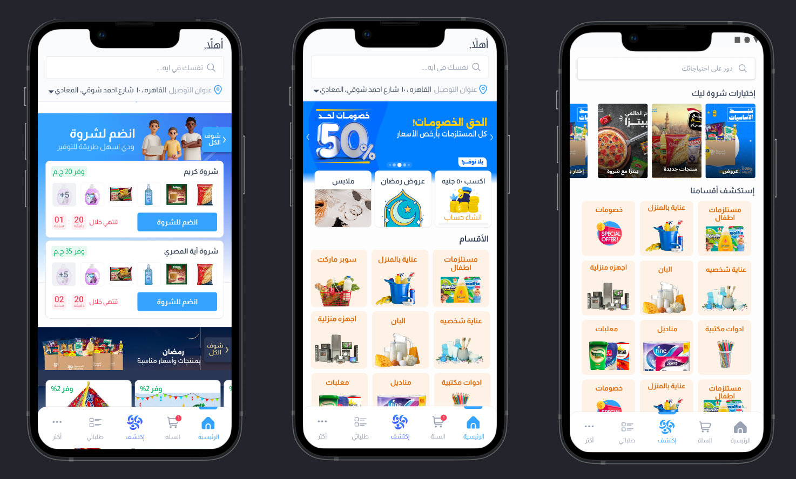
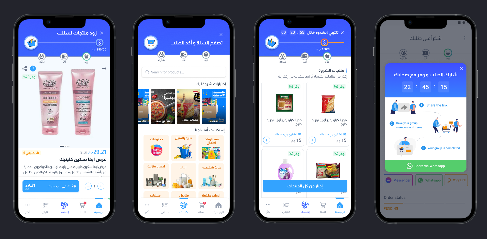
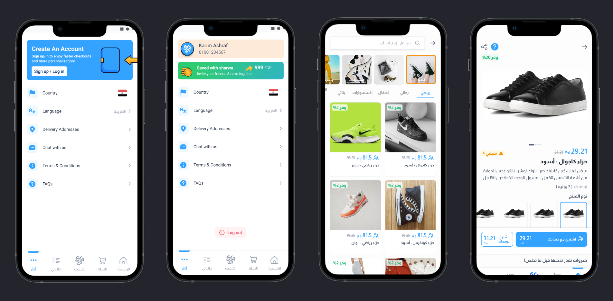

Customers had to understand an unfamiliar purchase model quickly.
The product depended on group participation, but the existing journey did not make the people, timing, and required actions easy to read.
Sharwa / Social commerce / 2022 to 2023
Sharwa offered lower prices when people bought together. I redesigned the product so customers could see the group, understand the steps, and compare the new option with familiar solo buying at the moment of decision.

01 / Executive summary
Group buying asked customers to commit before a group was complete, depend on other people, and act before a timer expired. For customers used to a normal cart and checkout, each of those steps created uncertainty. My work made the social mechanic visible in the interface instead of explaining it in marketing copy.
The product depended on group participation, but the existing journey did not make the people, timing, and required actions easy to read.
I worked across onboarding, home, the group-order flow, product choice, and responsive web, with alignment across Product, Operations, and Marketing.
Live group cards, numbered steps, and buy-alone versus buy-with-friends choices did more work than another explanatory screen.
App-open to order placement moved from 7% to 14%, while group joining moved from 40% to 75% within two months.
02 / The friction
The customer is agreeing to an outcome that still depends on participation from other people.
The purchase is social, so the interface has to make other members and remaining places visible.
A countdown can motivate action, but only after the customer understands what is at stake.
The group option becomes easier to judge when the solo price and flow remain visible beside it.
03 / Key decisions
Member avatars, remaining places, savings in pounds, and a countdown showed the mechanic in one glance. A single join action kept the commitment direct.
Add, confirm, and share gave the customer a current step and a visible end. The total remained visible throughout, and sharing received the clearest action.
Buy alone and buy with friends appeared side by side. The group option had to earn the choice instead of becoming the only available door.



04 / Product leadership
I led planning and design for the responsive web application and facilitated alignment across Product, Operations, and Marketing. The goal was not only visual consistency. Customers needed to encounter the same explanation of group buying across every surface and channel.
A new behavior becomes credible when the product, the operation, and the message all agree on what happens next.
05 / Reported movement
These figures describe movement during the period in which the work shipped. Pricing, supply, operations, and marketing also changed, so the numbers are context for the shared product outcome rather than a claim that design acted alone.